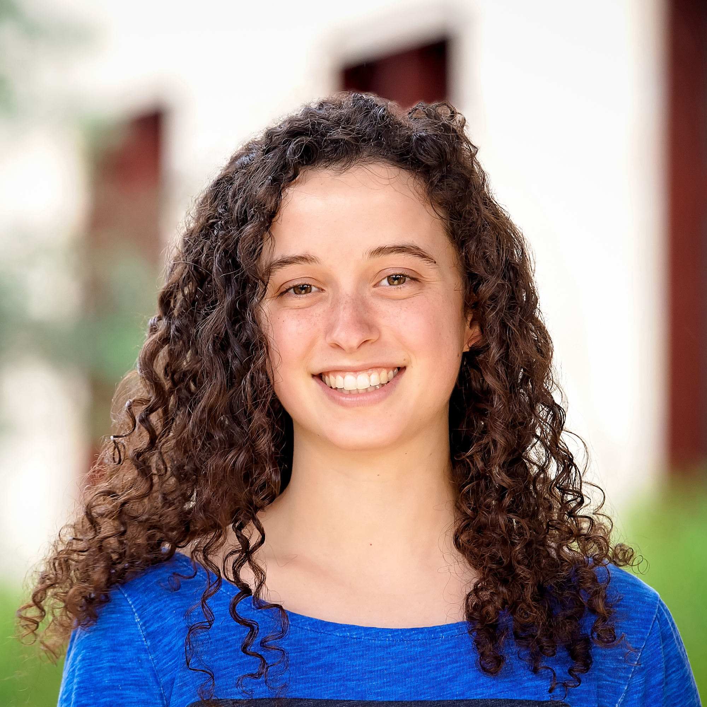
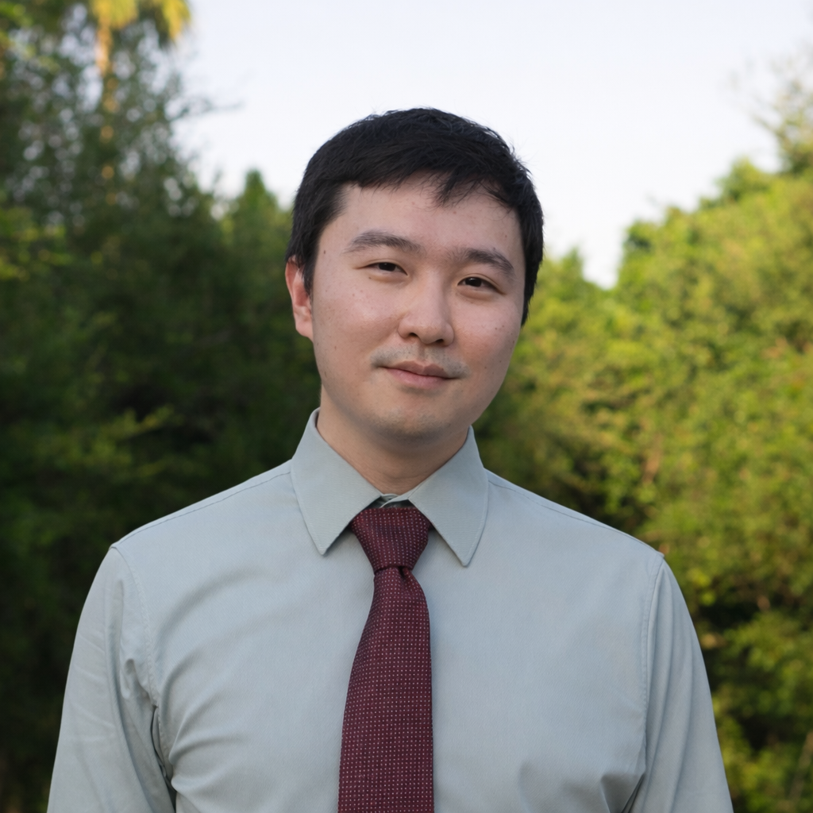

Overview
Recent robotics research increasingly targets physical general intelligence, emphasizing generality, learning, and adaptability across tasks. In contrast, industrial robots deployed in factories and warehouses—numbering in the millions worldwide—are optimized for precision, repeatability, reliability, and safety, but are typically single-purpose and tightly engineered for fixed workflows. This divergence has created a growing gap between what is demonstrated in research labs and what can be deployed in production environments.
This workshop focuses on the challenges of translating recent advances in autonomous manipulation and perception from lab to production. Rather than asking how industry can adopt existing research systems, we emphasize what researchers must change in their methods, assumptions, and evaluation practices to meet industrial constraints. Key research questions include:
- How can general-purpose robot systems achieve industrial levels of accuracy, speed, and robustness?
- What representations, learning paradigms, and system architectures support both adaptability and repeatability?
- How should researchers evaluate and benchmark autonomy under real-world manufacturing constraints?
- What role do explainability, monitoring, and failure handling play in production-ready autonomy?
This workshop aims to unite the industrial robotics community at RSS, bringing together researchers across different domains (e.g., manufacturing, warehousing, logistics) to broaden the discussion on how recent advancements in autonomy and AI have influenced the field. To foster new insights and collaborations, this workshop will feature invited technical talks by renowned experts, spotlight presentations by emerging academic and industrial researchers, and demos by academic and industry research groups to (1) disseminate ground-breaking methods and systems, (2) discuss open challenges facing autonomous industrial perception and manipulation, and (3) surface future research needs in the field.
Discussion Topics
- High-precision, contact-rich assembly and fine motor skills for tight tolerance and dexterous insertion tasks, with perception tightly coupled to control.
- Monitoring, error detection, and failure recovery for robustness during extended assembly sequences.
- Perception and pose estimation under factory realities such as clutter, occlusion, transparent or reflective parts, and high-speed motion.
- Manipulation of diverse objects and with varied dynamics spanning fast pick-and-place of arbitrary objects and manipulating deformables like cables, belts, tape, packaging, and bags.
- Factory world modeling, high fidelity simulation, and benchmarking to support sim2real transfer and evaluate policies for assembly and manipulation.
Invited Speakers
Talk Title: Robot Learning Research in Academia vs. Frontier AI Labs
Short Bio: Michael Ryoo re-joined Google DeepMind Robotics in March 2026. Prior to that,
he was with Salesforce AI Research for two years, and was with the robotics team at Google DeepMind (and
formerly Google Brain) for five years. He also holds a tenured position in the Department of Computer
Science (CS) at Stony Brook University as an associate professor. Previously, he was an assistant
professor at Indiana University Bloomington, and was a staff researcher within the Robotics Section of the
NASA's Jet Propulsion Laboratory (JPL). He received his Ph.D. from the University of Texas at Austin in
2008 and B.S. from Korea Advanced Institute of Science and Technology (KAIST) in 2004.
Talk Title: Not Quite Cutting Edge: Robotics Adoption Through a Manufacturer's Lens
Short Bio: Troy Cordie is Director of Industry Research at ARM Hub, where he works with
Australian manufacturers to understand and reduce the barriers to robotics adoption. A mechatronics
engineer by training, Troy completed a PhD in Modular Reconfigurable Field Robotics in collaboration with
the Queensland University of Technology and CSIRO, which led to the development of NeRobot, a modular
system designed to simplify bespoke robot deployment in remote and industrial environments. His broader
robotics experience spans industrial arms in cold spray 3D printing and computer vision for agricultural
robotics. At ARM Hub, he now leads research at the intersection of advanced manufacturing and Industrial
AI, working directly with the SMEs who want robotics but have not been able to deploy it.
Talk Title: Integrating Robotics, Computer Vision and Artificial Intelligence for Robust
Grasping and Manipulation in Real-World Scenarios
Short Bio: Juxi Leitner is an Applied Science Manager at Amazon in Berlin, Germany. He
has spent the better part of the
last two decades conducting robotics research across academia, government, and industry. Before joining
Amazon, Juxi was
founder, CEO, and CTO of LYRO Robotics, a startup creating general-purpose pick-and-place robots for the
food supply chain based in Melbourne, Australia.
In 2017, his team from the Australian Centre for Robotic Vision won the Amazon Robotics Challenge.
Talk Title: Robin Pick and Vulcan Stow - Lab to Production
Short Bio: Nicolas Hudson is a Principal Applied Scientist at Amazon Robotics, a position
held since 2021. Previously, they served as
a Senior Principal Research Scientist at CSIRO's Data61, where they were the Principal Investigator for
the DARPA Subterranean Challenge Team and led a
team researching robotic capabilities. Nicolas has also worked as a Senior Roboticist at both Google and
NASA Jet Propulsion Laboratory, and held engineering
roles at X and Boston Dynamics. They earned a Bachelor of Engineering with honors in Mechanical
Engineering from the University of Canterbury and a PhD in
Mechanical Engineering from Caltech.
Event Schedule
| 2:00 - 2:15 | Introduction and Motivation |
| 2:15 - 2:40 | Invited Talk: Michael Ryoo |
| 2:40 - 3:05 | Invited Talk: Troy Cordie |
| 3:05 - 3:35 | Spotlight Session and Poster Overview |
| 3:35 - 4:15 | Coffee Break and Poster Session |
| 4:15 - 4:40 | Invited Talk: Juxi Leitner |
| 4:40 - 5:05 | Invited Talk: Nicolas Hudson |
| 5:05 - 5:50 | Panel Discussion |
| 5:50 - 5:55 | Best Extended Abstract Certificate |
| 5:55 - 6:00 | Closing Remarks |
Accepted Abstracts
|
Line Bring-Up Is a Coordination Problem: A System for Standing Up Multi-Cell Learned-Policy Production
Lines Anya Singh, Vidyut Baradwaj, Varun Nair, Jai Relan, Jiahang He, Cabrel Happi |
Paper | ||
|
How Visible Are Silent Manipulation Failures? An Observability Study of False-Success Detection in
Simulated Robot Episodes Aarav Bedi |
Paper | Video | Poster |
|
Action Chunk Scheduling for Batched Robot Policy Serving Rohan Bansal*, David He*, Nadun Ranawaka Arachchige, Zhenyang Chen, Soobum Kim, Kexin Rong†, Danfei Xu† |
Paper | Video | Poster |
|
Task-Relevant Depth Quality Metrics for Suction Grasping Shivansh Inamdar |
Paper | Video | Poster |
|
SPARC: Reliable Spatial Annotations from Robot Demonstrations at Scale Nils Blank, Paul Mattes, Maximilian Xiling Li, Jakub Suliga, Thomas Roth, Moritz Reuss, Pankhuri Vanjani, Rudolf Lioutikov 🏆 Best Extended Abstract 🏆 |
Paper | Video | Poster |
|
vla.cpp: A Unified Inference Runtime for Vision-Language-Action Models Khanh Dang Nguyen, Hung Thinh Ho, Chinh Nguyen, Thanh Quoc Duong, Linh Dang Le, Duy Minh Ho Nguyen, Vien Anh Ngo, An Thai Le |
Paper | Video | Poster |
|
Multi-Fidelity Robotic Co-Design via the Refinement Limit Gordei Verbii, Kirill Bunin, Ilya Starikov |
Paper | Video | Poster |
|
MicroVLA: Edge-Deployable Vision Language Action at 10M Parameters Ngseo Kim, Junghyun Kim, Gi-Cheon Kang, Youngjae Yu, Byoung-Tak Zhang |
Paper | Video | Poster |
|
Multi-3DSA: A Multi-resolution 3D Mapping for Safety in Automated Factories Lucas Carvalho de Lima, Sisi Liang, Paul Flick, Michael Bruenig, Nicholas Panitz, Jen Jen Chung |
Paper | Video | Poster |
*Equal Contribution, †Equal Advising
Call For Papers
We invite extended abstracts of up to 3 pages (excluding references, acknowledgments, limitations, and
appendix) formatted in the RSS
template and submitted via the L2P Workshop
OpenReview console. The extended abstract must be submitted along with references, acknowledgments,
limitations, and appendices as one .pdf file. Supplementary videos, websites, or data are welcome in the
OpenReview
submission but not required, and must maintain author and affiliation anonymity.
Best Extended Abstract Certificate: The workshop will recognize one outstanding contribution with a Best
Extended Abstract Certificate.
Submissions will be reviewed in a double-blind process by workshop organizers and attendees.
Each submission must nominate one author as a reviewer to evaluate three other contributions, following
the RSS main
track's reciprocal review model. Authors are strongly encouraged to incorporate the feedback received from the
reviewers
to be considered for awards. Accepted abstracts will be published on the workshop website, invited for spotlight
presentations, and presented as posters.
We encourage forward-thinking submissions of new or in-progress ideas. Workshop paper versions of papers
accepted to the RSS 2026 main track or any other prior conferences are not permitted. We
strongly encourage in-person participation of at least one author in the workshop.
All deadlines are 11:59 PM Anywhere on Earth (AoE).
| Paper Submission Opens | Monday, May 4 |
| Paper Submission Deadline | Monday, June 15 |
| Review Period | Monday, June 15 - Friday, June 26 |
| Author Notification | Sunday, June 28 |
| Camera-Ready Deadline | Friday, July 10 |
| Spotlight Video Deadline | Friday, July 10 |
| Poster Deadline | Friday, July 10 |
| Event | Friday, July 17 |
Rules
- All submissions must adhere to our double-blind review policy.
- All author names and affiliations must not appear anywhere in the title or text of the submission or supplementary materials.
- Acknowledgments to people or funding agencies must not appear in the submission.
- There must be no links to external websites (e.g., YouTube, GitHub, institutional pages) in the submission.
- All submission metadata must be anonymized.
- All submissions must include the following, which do not count towards the 3-page limit:
- A Limitations section describing assumptions, failure modes, and other limitations with suggestions for future improvements.
- An AI usage statement (even if no AI tools were used).
- All authors must have an OpenReview profile, created at least two weeks before the submission deadline.
- Submissions must address the research questions and topics on this website. Real-robot experiments or convincing evidence of simulation-to-real transfer are encouraged. Non-robotics submissions will be returned without review.
- Papers submitted to the main conference cannot be submitted to this workshop.
- Bot-generated submissions will be desk rejected.
- Accepted submissions must provide poster and video presentations for the website archive by July 10.
- All posters must be size A0 in portrait format.
- Violation of any rules may result in desk rejection.
- In-person presentation is strongly encouraged for at least one author. Remote participation is allowed, but online meeting details will not be provided.
Reviewers are instructed to assess extended abstract contributions considering these rules, and to notify the workshop organizers in the event any of these rules are violated.
Organizers
Holly Dinkel
Samsung Research America
Bibit Bianchini
University of Pennsylvania